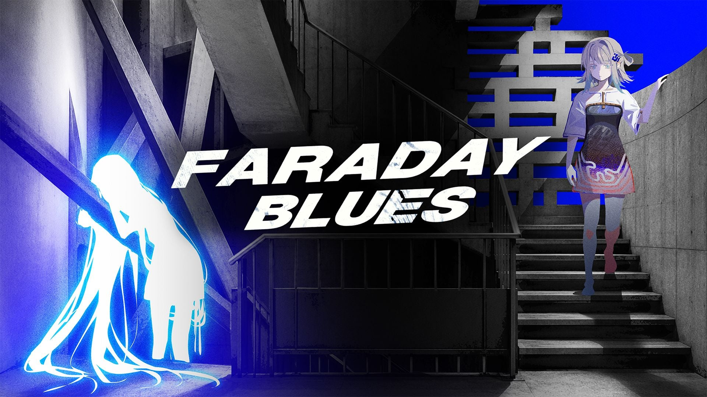

今日主线是 🎬 Xbox @ Tokyo Game Show 2026 已播片单（世界首发法拉第蓝 + 多条新锁）、漏报补入的 Another Eden Begins 发售，以及 AI 侧 Astra for Law（法律垂直配置 + 26 生态插件 / 47 社区 Skills，可推荐，非新一般旗舰）+ Claude Projects 重设计 + Anthropic 研发节奏测量。行业另有火焰纹章：万缕千丝首日评测增量与多条独立定档/发售。今日无新旗舰；今日有新 MCP/Skill 推荐。二次元空库未出 Tab；游戏开发空库未出 Tab。
覆盖
1 天（含昨 ~09:40 CST 后补入核）
新旗舰
无（现役仍 GPT-6 Astra / Claude Fable·Mythos 5.1 / Gemini 3.8 Flash / DeepSeek-V4.1-Flash；Grok docs 仍 4.6。Astra for Law 为垂直配置，不当新旗舰）
MCP / Skill
有新推荐：Astra for Law（26 partner plugins + 9 community / 47 skills）
展会
Xbox @ TGS 2026 已播（世界首发法拉第蓝 + 新锁多条）；Capcom Spotlight 见 2026-09-17，本日不复述
展会：Xbox @ TGS 片单（法拉第蓝世界首发；Edge of Memories / Hope in the City / 梦之形 / GACHIAKUTA / Once Human 等新锁）。
发售/漏报：Another Eden Begins；梦之形主机；法拉第蓝世界首发（2027）。
独立定档：Hope in the City 11/10；闇夜王国主机 11/5；归零巡礼 PS5 11/3；Ved: 疗愈所 9/22。
AI：Astra for Law（MCP/Skill 推荐）+ Claude Projects 重设计 + Anthropic 节奏三项测量；无新一般旗舰。
判定：Xbox 片单 + Another Eden 发售 + Astra for Law 推荐扛主线。FE 首日评测与独立定档为增量。不复述昨 Capcom Spotlight / FE·空轨发售翻牌 / Unity Codex / Claude SMB。不发涉政。二次元空库未出 Tab；游戏开发空库未出 Tab。
20独立 Signal
16高 Attention
2显示库
0新旗舰
1MCP/Skill 推荐
1展会片单
最高 Attention 落在 Xbox @ TGS 片单、Another Eden Begins 发售、法拉第蓝世界首发、Astra for Law（MCP/Skill 推荐，非新旗舰），以及 FE 首日评测 / Claude Projects / 多条独立定档。二次元空库未出 Tab；游戏开发空库未出 Tab。今日无新旗舰；今日有新 MCP/Skill 推荐。
独立 Signal
20（AI 3 + 行业 17）
高 Attention
16（fire≥2）
空库
二次元（未出 Tab）；游戏开发（未出 Tab）
独立游戏观察
有新增（6 条）
行业：Xbox @ TGS 片单；Another Eden Begins 发售；法拉第蓝世界首发；FE 首日评测；独立定档/发售多条。
AI：Astra for Law（插件/Skills 包可推荐）+ Claude Projects 重设计 + Anthropic 节奏测量。
空库：二次元、游戏开发 — 总览只记「未出 Tab」，不编造信号。
判定：两库同出；展会片单已出；Astra for Law 记应用轴推荐，不当新旗舰。
最高 Attention
🔥🔥🔥 · 游戏行业
🎬 Xbox @ Tokyo Game Show 2026（已播）
Xbox @ Tokyo Game Show 2026 Broadcast 于 9/17 18:00 CST（19:00 JST）已播（约 50 分钟）。官方自报含 17 段新鲜实机/公布、一次惊喜发售与一场世界首发；收尾小岛秀夫登场公布 PHYSINT 主演。片单细则见 exhibition_slate。
事件
展会官方秀已播 / 🎬 展会片单
档期
2026-09-17 18:00 CST（19:00 JST）
世界首发
法拉第蓝（Faraday Blues）
新锁
Edge of Memories 11/5；Hope in the City 11/10；梦之形主机今日可玩；GACHIAKUTA: BREAKOUT 2027；Once Human 海洋扩展 10/22 等
🔥🔥🔥 · 游戏行业
Another Eden Begins
Wright Flyer Studios / Studio Prisma《Another Eden Begins》正式发售：Switch / Switch 2 / Steam；加藤正人剧本、光田康典主题曲，战棋式指令战斗、无抽卡单机。Steam 英文区日期栏 Sep 16、coming_soon=false；官方…
事件
正式发售（漏报补入）
平台
Switch / Switch 2 / PC（Steam）
发售日
2026-09-17（官方；Steam 英文区 Sep 16）
开发·发行
Studio Prisma / Wright Flyer Studios
🔥🔥🔥 · 游戏行业
法拉第蓝（Faraday Blues）
Serenity Forge 于 Xbox @ TGS 2026 世界首发科幻视觉小说×策略卡牌《法拉第蓝》：PS5 / Xbox Series / PC（Steam + MS Store），2027。女儿寻找「不知道自己存在」的父母，用角色卡改写悲剧选择，宣称 64 种结局。展会周独立世界首发本身达门槛。
Xbox @ Tokyo Game Show 2026 Broadcast 于 9/17 18:00 CST（19:00 JST）已播（约 50 分钟）。官方自报含 17 段新鲜实机/公布、一次惊喜发售与一场世界首发；收尾小岛秀夫登场公布 PHYSINT 主演。片单细则见 exhibition_slate。

Gematsu / Xbox 秀代表图
事件
展会官方秀已播 / 🎬 展会片单
档期
2026-09-17 18:00 CST（19:00 JST）
世界首发
法拉第蓝（Faraday Blues）
新锁
Edge of Memories 11/5；Hope in the City 11/10；梦之形主机今日可玩；GACHIAKUTA: BREAKOUT 2027；Once Human 海洋扩展 10/22 等
Serenity Forge 于 Xbox @ TGS 2026 世界首发科幻视觉小说×策略卡牌《法拉第蓝》：PS5 / Xbox Series / PC（Steam + MS Store），2027。女儿寻找「不知道自己存在」的父母，用角色卡改写悲剧选择，宣称 64 种结局。展会周独立世界首发本身达门槛。
官方 / 一线配图
事件
世界首发 / 新作公布
平台
PS5 / Xbox Series / PC
档期
2027
开发·发行
Serenity Forge
Steam 简中名称
法拉第蓝
AppID
5221470
时点
Xbox 秀 + Gematsu 9/17 6:19 AM EDT = 9/17 18:19 CST
Xbox Game Studios / Kojima Productions：小岛秀夫于 Xbox @ TGS 收尾登场，确认 Bill Skarsgård 出演 PHYSINT 男主；阵容另有 Charlee Fraser、Don Lee、浜辺美波。同步释出 OD 中 Sophia Lillis / Hunter Schafer 表演捕捉花絮。平台与档期仍未宣。
官方 / 一线配图
事件
主创/主演官宣
作品
PHYSINT；附带 OD 更新
平台·档期
均未公布
时点
Xbox 秀 one more thing；Gematsu 9/17 6:37 AM EDT = 18:37 CST